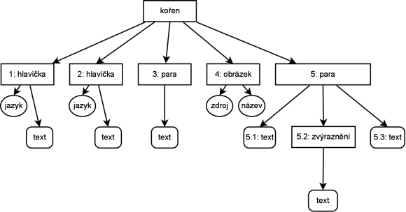

XML/HTML & DOM
by Jiří Znamenáček
Úvod
Z historických důvodů si musí HTML-parsery poradit prakticky s čímkoli, co se jim předhodí. Ale až teprve HTML5 kodifikuje, jak se mají parsery chovat k nestandardním situacím. (Zjednodušeně stručně řečeno – každý browser, který jste dodnes používali, vykresloval stránku trochu jinak.)
To ostře kontrastuje s XML, které bylo navrženo tak, aby při jakékoliv chybičce parser vyhodil chybu a zastavil jakékoliv zpracovávání obsahu. Nepřekvapivě pokus o implantaci tohoto modelu do prostředí HTML na internetu (v podobě XHTML) beznadějně selhal.
XML jako strom I
Typický XML-1.0 dokument nemusí mít hlavičku a je v kódování UTF-8. Jeho struktura je stromečková, aneb Mílovým přirovnáním „různě oštítkované (atributy) krabice (elementy) zanořené navzájem do sebe bez proboření stěn (well-formed), přičemž vnější krabice je právě jedna (kořenový element)”:
XML jako strom II
Struktura příslušných „krabic“, tj. jednotlivých částí stromu, graficky znázorněná (hranaté obdélníky jsou elementy, elipsy atributy těchto elementů a zakulacené obdélníky jsou koncové textové listy stromu):

XML a jmenné prostory
XML je vlastně metajazyk – popisuje, jak vytvářet nové XML-jazyky. Výhodou je, že tyto různé dialekty („různobarevné krabice”) můžeme navzájem pomocí tzv. jmenných prostorů míchat – elementy/atributy z jiného XML-dialektu jsou prostě označeny identifikátorem tohoto dialektu (tj. jmenným prostorem, „barvou”):

XML a DOM
DOM (Document Object Model) je přímá objektová reprezentace stromečkové struktury XML-dokumentu.
Standardní W3C DOM je velmi nízkoúrovňový a na běžnou práci neskutečně neohrabaný (a to se ještě vůbec nezmiňuji o výstřelcích typu DOM3 XPath…). Výhodou naopak je, že se na něm všechny implementace víceméně shodnou (je to standard) a je tudíž k dispozici prakticky kdekoliv. Další jasnou výhodou je, že pokud ho použijeme na generování požadovaného výstupního XML, máme automaticky zaručenou přinejmenším jeho well-formednost („krabice v krabicích bez probouraných stěn”).
Serializace do řetězce
V jednoduších případech – zvláště pokud druhá strana nepožaduje XML v podobě DOM-objektu – je však nejjednodušším způsobem, jak získat výstupní XML, nikoli cesta jeho budování přes DOM, ale obyčejné „printování” požadovaných řetězců do výstupního souboru/struktury. Ale musíte si být jisti, že „tisknete” opravdu XML (ergo při ladění použijte např. xmllint)!
XML a „bílé znaky“
Největší „podraz” při zpracování dokumentů pomocí DOMu představují tzv. prázdné znaky (white-spaces). Specifikace výslovně říká, že jsou významné, ale konkrétní chování parseru je buď závislé na implementaci nebo se dá dokonce programově řídit. Následující sekvence elementů..
<prvky>
<prvek>
..je tak při serializaci zpravidla převedena na DOMovou sekvenci..
ElementNode [prvky] TextNode [nová řádka (normalizovaná) a několik mezer] ElementNode [prvek]
..ačkoli to vůbec nemusí být to, co měl autor příslušného XML-jazyka v úmyslu. A jelikož původní specifikace jakýmsi záhadným způsobem neobsahovala metodu pro „vrať následující Element”, ale pouze „vrať následující Node”, dokázala (a občas pořád dokáže) být navigace po DOMu a práce s ním často pěkně „ukecaná” a otravná (protože často je následujícím listem právě prázdný textový).
HTML a DOM I
V dnešní době musí prohlížeč nad HTML-stránkou umět neuvěřitelné množství věcí, namátkou např. aplikovat různé vizuální styly na její různé části (a to často podle stavu jiných částí) nebo hýbat s různými částmi stránky závisle i nezávisle na ostatních.
Je jasné, že pro to všechno musí mít prohlížeč sofistikovanou vnitřní reprezentaci zpracovávané stránky. Touto reprezentací je právě DOM, resp. jeho rozšíření pro HTML-soubory. (Striktně řečeno je to spíše nadstavba nad DOMem, protože typický browser toho umí – a musí umět – mnohem více, než aktuální standard požaduje.)
HTML a DOM II
DOM API pro HTML dědí prakticky vše (použitelné v rámci HTML) po základním DOMu XML-souborů, tj. obsahuje primitiva pro práci se značkovými listy a jejich atributy, textovými listy, obecným dokumentem apod.
Navíc ovšem obsahuje i primitiva určená přímo pro práci s HTML, např. obecný prvek Element je v rámci HTML rozšířen na HTMLElement, z nějž jsou odvozeny objekty pro všechny definované HTML-značky.
Tyto objekty samozřejmě dědí základní vlastnosti Elementu (např. obecnou práci s atributy nebo potomky elementu), ale zároveň jsou doplněny o specifické vlastnosti a metody vhodné pro manipulaci s konkrétní HTML-značkou (např. „zkratky” pro přístup ke standardním atributům nebo pro manipulaci se standardními potomky elementu).
HTML a DOM III
Převod HTML do DOMu se však vyznačuje jistými specifiky:
- „Problém” bílých znaků se zde vyskytuje sice také, ale alespoň v rámci HTML jsou jisté sekvence elementů, u kterých opravdu nemají význam (např. mezi jednotlivými řádky či buňkami tabulky) a ke kterým se většina parserů také tak chová.
-
Zajímavější je, že některé HTML-struktury jsou zaserializovány jinak, než by člověk čekal – např. již výše zmíněná tabulka je v minimální podobě (tj. bez hlaviček a patiček) stejně zaserializována v podobě..
ElementNode [table] ElementNode [tbody] ElementNode [tr] ElementNode [td]
..ačkoli běžně člověk element<tbody>nepoužije.
Z toho mimo jiné plyne, že „naivní” navigace po DOMu pomocí základních metod (z XML-DOMu; zde např. firstChild) selže, protože DOM má jinou strukturu, než člověk očekává. Ve výsledku buď svůj základní kód zesložitíte o kontroly, na jakých elementech se právě nacházíte a podobné, nebo budete používat specifické metody, které s touto strukturou již počítají.
CSS, JavaScript (ECMAScript) a DOM
Nepřekvapivě se DOM (skrytě) uplatňuje i při aplikaci stylopisných pravidel jazyka CSS. Jak jinak než znalostí celé struktury dokumentu totiž dokážete např. očíslovat za sebou následující paragrafy pořadovým číslem nebo aplikovat specifická pravidla pouze pro každý druhý podelement elementů v jisté třídě?
Místo, kde se s DOMem v rámci HTML ale setkáte zdaleka nejčastěji, je však JavaScript. Původně se jeho aplikace omezovala na kontrolu vyplnění formuláře nebo výměnu obrázků za jiné. Ale v dnešní době stojí JavaScript za naprostou většinou dynamického obsahu (pokud si tedy odmyslíme Flash).
Jelikož pokrok se nedá zastavit, časy, kdy se psaly jednoúčelové kódy s mnoha výjimkami pro jednotlivé prohlížeče, jsou už dávno pryč a dnes světu vládnou zastřešovací knihovny, které pro většinu běžných operací nabízejí přímé zkratky (např. „na klik myší schovej/ukaž tento prvek”) a rozdíly mezi prohlížeči úspěšně schovávají.
Výsledkem je, že nízkoúrovňovým DOMem se dnes už nemusíte prakticky zabývat, pokud nemáte specifické požadavky, ale na druhou stranu čím dál tím méně lidí má představu, jak to celé vlastně funguje.